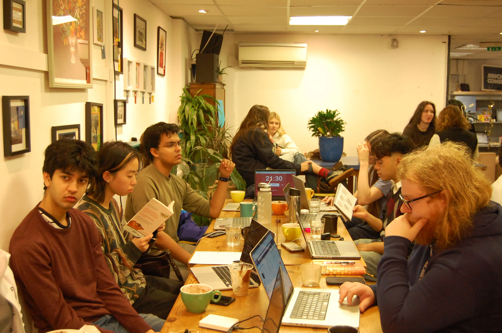
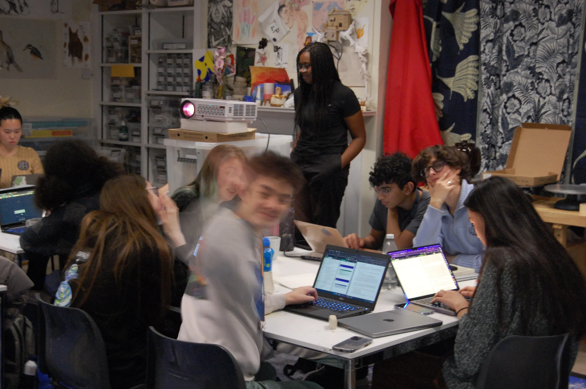

`about`
we started [orchard] to create a dedicated place for people to pursue their passion projects, to do something for themselves, away from their obligations. historically, great creative work across disciplines happened in small, experimental, thriving communities like [orchard]. the spirit of making, seeing people do work they believe in: it's special!
participants have said that they would tell their friends [orchard] is a place with good vibes, a community worth growing with, casual and inspiring demos, and great tea.
[orchard] follows the format of socratica, a community of makers and thinkers that has been running for years in cities around the world. we often host joint sessions with the nodes in London and Cambridge.
what to make?
your project can be something you've been wanting to do, something you might fail at, something you love… as long as it makes you feel alive! we encourage you to do something you can grow over a long time, feel proud of, and present at the end.
some examples of projects include:
- a website! like this one (which was made at playspace, e.g. [orchard] but in SF)
- crafting essays
- writing a book
- research in your field
- building a product you've always wanted
- design for an initiative you run
- learning a new skill
when & where?
we run weekly sessions during oxford term time, on tuesday evenings at christ church and saturday afternoons at common ground cafe. up-to-date information and signup can always be found on our calendar.
as mentioned above, we are one of many socratica nodes. if you're not near us, check out the map to see if there's a node near you! :)
support
if you are interested in supporting [orchard], if you want to collaborate with us, or if you know a good spot to host [orchard], we'd love to chat! also, we're very keen to help if you want to start something like [orchard] where you life,. come to one of our sessions or drop us an email at ox dot orchard at gmail dot com.